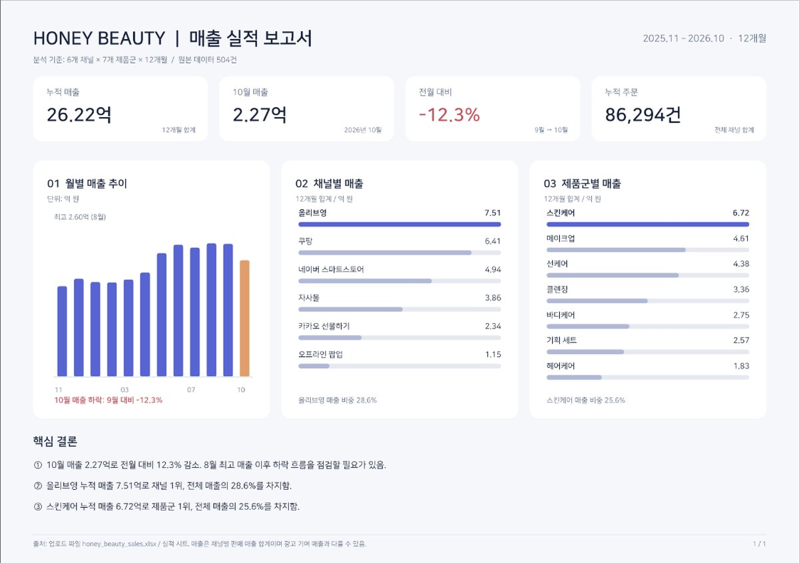
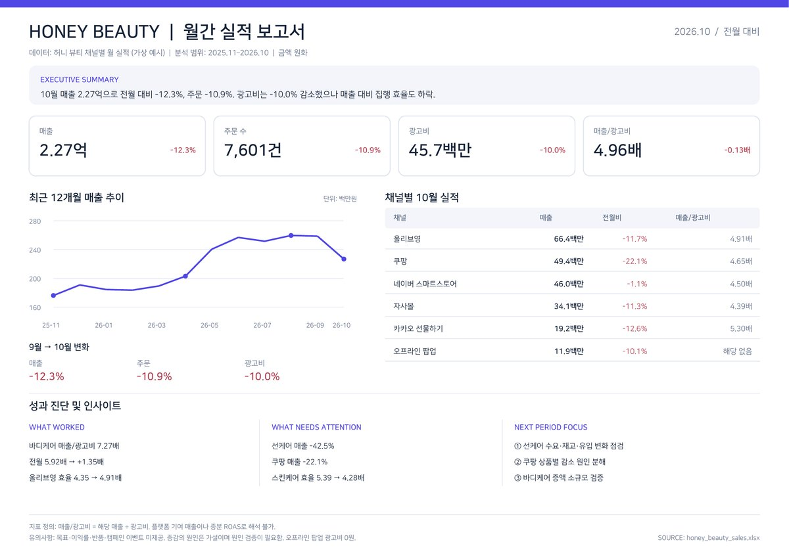

EP.31 · 성과 보고서 스킬
엑셀 넣고 단 10초,
엑셀 넣고 단 10초,
보고서 한 장 끝
엑셀이랑 스킬 파일 하나를 같이 올리면, 전월 대비 · 잘된 점 · 아쉬운 점 · 다음 달 할 일까지 한 장으로 채워요. 그 파일은 Claude 만든 회사(Anthropic)가 GitHub에 무료로 공개했어요.
01스킬 파일 받는 곳
- 아래 링크를 열어요. Anthropic 공식 저장소 knowledge-work-plugins 안의 marketing › skills › performance-report › SKILL.md예요.
- 파일 화면 오른쪽 위의 다운로드 버튼(Download raw file)을 눌러 SKILL.md로 저장해요.
- ChatGPT나 Claude 대화창에 엑셀 + SKILL.md 두 파일을 같이 올리고, 아래 요청문을 보내요.
글 파일(마크다운)이라 프로그램을 설치하거나 실행하지 않아요. Apache-2.0 라이선스로 공개돼 있어요(2026-11-07 확인 · 별 3.5만).
02요청문
영상에서 쓴 요청문 · 두 파일과 같이 보내기
이 엑셀로 실적 보고서 한 장 만들어 줘. 같이 올린 SKILL.md 틀대로.
파일 이름이 SKILL.md가 아니면 요청문 속 이름도 그 이름으로 바꿔요.
03그냥 시킬 때 vs 파일을 줄 때
가상 브랜드 허니 뷰티의 12개월 · 채널 6 · 제품군 7 실적 엑셀(504줄)로 2026-11-07에 돌렸어요. ChatGPT 임시 채팅 · Claude 시크릿 채팅이에요.
- 그냥 시킬 때("이 엑셀로 실적 보고서 한 장 만들어 줘. 차트 세 개, 결론 세 줄."): 12번 모두 숫자는 맞았어요. 그런데 결론은 "10월 매출 12.3% 감소 · 올리브영 1위 · 스킨케어 1위"처럼 차트를 다시 읽어 주는 말이 많았어요. 스킬 틀 항목(전월 대비 · 잘된 점 · 아쉬운 점 · 다음 달 할 일 등)은 0~2개였어요.
- 스킬 파일을 줄 때: Claude 6번 · ChatGPT 6번, 12번 모두 스킬 틀을 따랐어요. 전월 대비 표, 잘된 점 · 아쉬운 점, 다음 달 우선 실행 과제가 들어갔어요. ChatGPT 2번은 '잘된 점/아쉬운 점' 제목 없이 '성과 진단' 한 칸에 같이 적었어요.
- 걸린 시간: 파일을 올리고 한 줄 쓰는 건 금방이고, 보고서가 나오기까지는 ChatGPT 2분 23초~4분 10초, Claude 2분 41초~6분 2초였어요.
- 모양: ChatGPT는 대부분 A4 가로 PDF 한 장을 바로 줬어요. Claude(시크릿)는 대화창 안에 표와 글로 길게 정리했어요.


04미리 알아 둘 것
- 숫자는 원본 합계와 한 번 대조하세요. 이번 12번은 맞았지만 매번 보장되진 않아요.
- 회사 실적 파일을 올리기 전에 회사 보안 규정을 확인하세요.
- 엑셀에 목표값이 없으면 '목표 대비' 칸은 비거나 "목표 없음"으로 나와요. 목표를 같이 주면 그 칸도 채워요(이번엔 목표 없이 돌렸어요).
- '잘된 점 · 아쉬운 점'의 이유는 AI의 추측이에요. 원인 데이터(행사 · 재고 등)가 없으면 확인할 점으로 받아 주세요.
05출처
- Anthropic, knowledge-work-plugins — marketing/skills/performance-report/SKILL.md (Apache-2.0). 2026-11-07 확인.
- 실험 데이터는 가상 예시(허니 뷰티)예요. 썸네일 그림은 AI로 만들었어요.
실무에서 바로 쓰는 AI 활용법, 하나씩 올려요.
대행사에서 AI 교육하는 현직 마케터가 정리해요.
인스타에서 팔로우